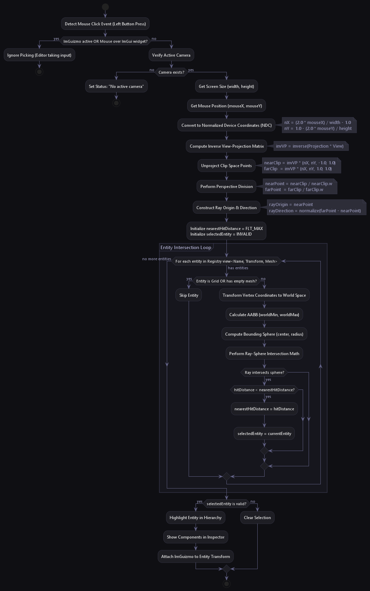

This document describes the design of the engine's interactive editor UI, built with ImGui and ImGuizmo, and details the mathematical implementation of viewport raycast picking and scene serialization.

Raycast Picking
ImGui & ImGuizmo Integration
The editor frontend is managed by EditorUI.cpp. It integrates Dear ImGui with Vulkan and GLFW backends.
- Initialization: The system allocates a custom descriptor pool (VkDescriptorPool) for ImGui font textures, initializes window events hooks (ImGui_ImplGlfw_InitForVulkan), and registers the Vulkan rendering callbacks (ImGui_ImplVulkan_Init).
- Fly Mode vs Edit Mode: The user can toggle between modes by pressing the F key:
- Edit Mode: Releases the cursor, allowing the user to select entities, drag gizmos, and click UI inputs.
- Fly Mode: Disables the cursor (GLFW_CURSOR_DISABLED), redirecting raw mouse movement and keyboard inputs to camera traversal.
Editor Panels & Controls
The UI is divided into dockable panels providing full control over the active scene:
- Hierarchy Panel: Lists all entities in the active registry. Clicking an entity selects it. Provides actions to:
- Create new primitive entities (Cube, Triangle, Quad).
- Create new camera and grid entities.
- Duplicate existing entities (copies attributes and shifts positions).
- Rename entities using inline text buffers.
- Delete entities from the active registry.
- Inspector Panel: Exposes components attached to the selected entity for real-time modification:
- Transform Editor: Direct floating-point fields and slider controls to adjust 3D Translation, Rotation, and Scale.
- Mesh Editor: Exposes glTF path fields. Allows loading external geometries (like .gltf or .glb) onto the entity mesh component.
- Material Editor: Color picker to adjust RGB tinting, and a texture path field to load image assets onto the material.
- Camera Editor: Slides to modify Field of View (FOV), speed settings, and mouse sensitivity.
- Grid Editor: Configures infinite grid line spacing, spacing colors, and fade-off distance bounds.
- Asset Browser Panel:
- Recursively scans the local assets/ directory and renders an interactive file tree.
- Contextually displays assignment buttons (e.g. "Use Model" or "Use Texture") next to recognized file types if an active entity is selected. Clicking these automatically loads and maps the asset onto the selection.
- Extensible Context Menu: Integrated with AssetBrowserRegistry, allowing developers to create new asset files (such as .anim binary animation files) directly inside target folders via right-click context menus.
- Scene Controls Panel: Contains controls to serialize/deserialize the active scene JSON file (defaults to assets/scenes/test_scene.json).
- Debug Console Panel: Displays frame rate metrics (FPS), picking data (ray origin, ray direction, click ray intersects), and active state descriptions.
Specialized Editor Windows
In addition to standard dockable panels, the editor provides specialized windows available under the Window main menu bar:
1. Animation Editor Window (Window -> Animation Editor)
A Unity-style keyframe timeline editor for creating and modifying animation clips on the selected entity:
- Reflected Property Table: Uses an ImGuiTable layout powered by ComponentReflectionRegistry to dynamically enumerate editable properties on components (e.g., Transform position, rotation, scale, or custom component fields).
- Property Selection & Recording: Add or remove animated channels with [+] / [-] controls. Click Add Keyframe to record the current value of all animated properties into keyframes at the active playback scrubber position.
- Timeline Scrubber: Drag or click along the timeline canvas to position the playhead. Jump between existing keyframes using < and > buttons.
- Playback & Clip Management: Play/Pause controls, loop toggles, playback speed scaling, and clip selection dropdowns.
2. Animator Controller Editor Window (Window -> Animator Controller)
A visual state machine and locomotion blend tree editor built on top of the generic Node Graph Framework:
- State Machine Nodes: Visual node cards for Entry (green), Any State (purple), State (blue), and Blend Tree (teal).
- Parameter Manager: Configure named float parameters (e.g. velocityX, velocityY, speed) used to drive transitions and blend trees.
- Visual Blend Tree Editor: Configure 1D and 2D Freeform Cartesian blend trees with a visual 1D threshold bar, motion list, and clip pickers inside the framework's right-side detail panel.
- Transition Rules: Connect state nodes using Bezier curves to create transitions. Set crossfade blending durations and condition rules (>, <, ==).
- For a complete guide, see Animator Controller Editor Guide.
3. Node Graph Demo Window (Window -> Node Graph Demo)
Demonstrates the reusable generic Node Graph Framework:
- Features lightweight node cards, Bezier curve links, custom pin colors, panning grid canvas, right-side detail panel (detailPanelCallback), and full JSON serialization/deserialization.
- For a complete guide, see Node Graph Framework Guide.
Viewport Gizmos (ImGuizmo)
To manipulate 3D entities in world space, the editor integrates ImGuizmo.
- Projection Alignment: Translates camera projection and view matrix coordinates to screen coordinate overlays.
- Vulkan Clip Adjust: Corrects Vulkan's inverted Y-axis clip coordinate calculations: cpp
glm::mat4 proj = renderer.getActiveCameraProjection();
proj[1][1] *= -1.0f; // Invert projection coordinate for Vulkan space alignment
- Decomposition: When the user drags a gizmo, the result is outputted as a combined transformation matrix (glm::mat4 model). The engine decomposes this matrix back to position, rotation, and scale components to update the entity's Transform component: cpp
ImGuizmo::DecomposeMatrixToComponents(&model[0][0], translation, rotation, scale);
Viewport Viewport Raycast Picking Math
When the user clicks in the 3D viewport, the screen-space click coordinate must be cast as a 3D ray into the scene to identify clicked objects.
Step-by-Step Projection Pipeline
Step 1: Normalized Device Coordinates (NDC)
Screens coordinates (mouseX, mouseY) in pixels are converted to NDC space $[-1, 1]$: [nX = \frac{2.0 \cdot \text{mouseX}}{\text{width}} - 1.0] [nY = 1.0 - \frac{2.0 \cdot \text{mouseY}}{\text{height}}]
Step 2: Unprojecting Clip Space Points
We compute the inverse View-Projection matrix (invVP) and multiply it by the NDC coordinates at the near clip plane ((z = -1.0)) and far clip plane ((z = 1.0)): [\text{nearClip} = \text{invVP} \cdot \begin{pmatrix} nX \ nY \ -1.0 \ 1.0 \end{pmatrix}, \quad \text{farClip} = \text{invVP} \cdot \begin{pmatrix} nX \ nY \ 1.0 \ 1.0 \end{pmatrix}]
Step 3: Perspective Division
Divide clip coordinates by their projection scale component w to yield world-space coordinates: [\text{nearPoint} = \frac{\text{nearClip}}{\text{nearClip.w}}, \quad \text{farPoint} = \frac{\text{farClip}}{\text{farClip.w}}]
Step 4: Construct Ray
The ray's starting point is the near point, and its direction is the normalized vector pointing from near to far: [\text{rayOrigin} = \text{nearPoint}] [\text{rayDirection} = \text{normalize}(\text{farPoint} - \text{nearPoint})]
Step 5: Ray-Sphere Intersection Test
For each entity in the registry view:
- Transforms vertex coordinates using its model matrix to calculate its world-space Axis-Aligned Bounding Box (AABB).
- Computes a bounding sphere from AABB:
- $\text{center} = \frac{\text{worldMin} + \text{worldMax}}{2}$
- $\text{radius} = \text{length}(\text{worldMax} - \text{center})$
- Performs ray-sphere intersection by solving the quadratic equation: [t^2 \cdot (\mathbf{d} \cdot \mathbf{d}) + 2t \cdot (\mathbf{oc} \cdot \mathbf{d}) + (\mathbf{oc} \cdot \mathbf{oc}) - r^2 = 0] where $\mathbf{oc} = \text{rayOrigin} - \text{center}$ and $\mathbf{d} = \text{rayDirection}$.
- If the discriminant is positive, the ray hits the sphere. The entity with the smallest intersection distance $t$ is selected.
C++ Viewport Picking Implementation
Below is the actual C++ implementation from EditorUI::handleViewportPicking:
const float normalizedX = static_cast<float>((2.0 * mouseX) / static_cast<double>(width) - 1.0);
const float normalizedY = static_cast<float>(1.0 - (2.0 * mouseY) / static_cast<double>(height));
const glm::mat4 inverseViewProjection = glm::inverse(renderer.getActiveCameraViewProj());
const glm::vec4 nearClip = inverseViewProjection * glm::vec4(normalizedX, normalizedY, -1.0f, 1.0f);
const glm::vec4 farClip = inverseViewProjection * glm::vec4(normalizedX, normalizedY, 1.0f, 1.0f);
const glm::vec3 nearPoint = glm::vec3(nearClip) / nearClip.w;
const glm::vec3 farPoint = glm::vec3(farClip) / farClip.w;
const glm::vec3 rayDirection = glm::normalize(farPoint - nearPoint);
const glm::vec3 rayOrigin = nearPoint;
glm::vec3 oc = rayOrigin - center;
float a = glm::dot(rayDirection, rayDirection);
float b = 2.0f * glm::dot(oc, rayDirection);
float c = glm::dot(oc, oc) - radius * radius;
float discriminant = b * b - 4.0f * a * c;
if (discriminant >= 0.0f) {
float sqrtD = sqrt(discriminant);
float t0 = (-b - sqrtD) / (2.0f * a);
float t1 = (-b + sqrtD) / (2.0f * a);
float hitDistance = (t0 > 0.0f) ? t0 : t1;
}
ImGui Viewport Coordinates Note
In a full-screen application, glfwGetCursorPos yields mouse offsets relative directly to the render buffer.
However, when drawing the viewport within a sub-docked ImGui panel (e.g., inside an "Editor Viewport" window), the coordinates must be offset:
- Subtract the ImGui window position: mouseX -= ImGui::GetWindowPos().x
- Subtract the tab/menu padding offset: mouseY -= ImGui::GetWindowContentRegionMin().y
- Use the content region bounds for projection width/height: width = ImGui::GetContentRegionAvail().x
Currently, this prototype uses the full GLFW window size, assuming the editor controls wrap the viewport overlay dynamically. If shifting to dockable sub-viewports, adjusting the mouse coordinates by the window offsets prevents picking offsets.
Scene Serialization
The engine implements a decoupled, component-agnostic serialization framework using SceneSerializer.cpp, ComponentSerializerRegistry.hpp, and JSONUtils.hpp:
- JSONUtils: Exposes standard scanner helpers to format output streams (indent, quote, vec3ToJson) and extract data from JSON strings (extractStringValue, extractFloatArray, extractFloatValue).
- ComponentSerializerRegistry: A singleton registry where systems register std::function callbacks for serializing and deserializing specific component types.
Saving Scene File
- Iterates through all entities in the active scene.
- Writes the core metadata common to all entities: name, position, rotation, and scale.
- Loops through all registrations in the ComponentSerializerRegistry and triggers their serialize callbacks, allowing components to append their custom keys to the JSON representation stream.
Loading Scene File
- Reads the scene file into a string buffer and splits it into entity JSON objects via JSONUtils::extractEntityObjects.
- Unloads the active scene, destroying existing entities.
- For each entity JSON object:
- Creates a new entity and deserializes the core components (Name and Transform).
- Loops through all registered component deserializers, passing the entity and its corresponding JSON block to dynamically emplace active components.
This decoupled architecture allows developers to create and register custom components in game projects and save/load them without modifying any engine-level code.
 1.17.0
1.17.0